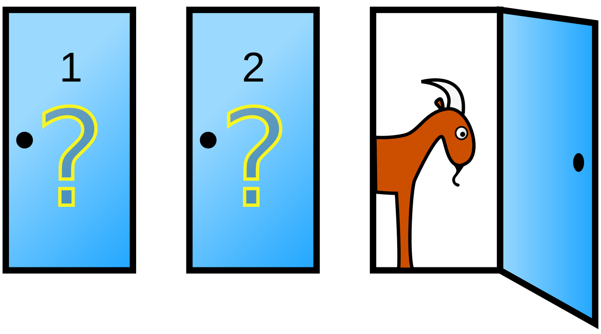

<html data-theme="light"></html><header><meta name="viewport" content="width=device-width, initial-scale=1"><link rel="stylesheet" href="https://cdn.jsdelivr.net/npm/bulma@1.0.0/css/bulma.min.css"><script src="https://kit.fontawesome.com/fd17b6d7c8.js" crossorigin="anonymous"></script><link rel="stylesheet" href="styles.css"><link rel="preconnect" href="https://fonts.googleapis.com"><link rel="preconnect" href="https://fonts.gstatic.com"><link rel="stylesheet" href="https://fonts.googleapis.com/css2?family=Yrsa:ital,wght@0,300..700;1,300..700&amp;display=swap"><link rel="stylesheet" href="https://fonts.googleapis.com/css2?family=Merriweather:ital,wght@0,300;0,400;0,700;0,900;1,300;1,400;1,700;1,900&amp;display=swap"><script src="Script.js" type="module"></script></header><body class="has-background-light has-text-dark" onLoad="execScripts()" style="width:100%;--family-serif:&apos;Yrsa&apos;, serif;--family-secondary-serif:&apos;Merriweather&apos;, serif;--family-primary:var(--family-serif);--family-secondary:var(--family-secondary-serif);font-family:var(--family-primary);font-family:var(--family-secondary)"><section class="container is-fluid"><nav class="navbar is-fluid has-text-dark has-background-light" role="navigation" aria-label="main navigation"><div class="navbar-brand"><a id="navbar-burger" class="navbar-burger is-text has-text-dark" role="button" aria-label="menu" aria-expanded="false" data-target="navbarBasicExample"><span aria-hidden="true"></span><span aria-hidden="true"></span><span aria-hidden="true"></span><span aria-hidden="true"></span></a></div><div id="navbarBasicExample" class="navbar-menu navbar-end"><a class="navbar-item" href="about.html">About</a></div></nav><div class="container"><div class="container"><div class="is-size-1 mb-5 mt-6 has-text-dark has-text-weight-bold">Notes, Essays and Talks</div><div class="is-size-2 is-family-secondary mb-6 has-text-dark has-text-weight-light">A collection of ideas in varying stages of bakedness.</div></div><div class="container"><div class="columns"><div class="column is-four-fifths"><div class="mb-6"><span style="border-style:solid;border-right-width:2px;border-bottom-width:0px;border-top-width:0px;border-left-width:0px;border-right-color:#00d1b2;padding-right:20px;margin-right:10px">TOPICS</span><span id="Agile" class="tag is-hoverable is-rounded is-size-6">Agile</span><span id="Bayes" class="tag is-hoverable is-rounded is-size-6">Bayes</span><span id="Chess" class="tag is-hoverable is-rounded is-size-6">Chess</span><span id="Circular Economy" class="tag is-hoverable is-rounded is-size-6">Circular Economy</span><span id="Data Science" class="tag is-hoverable is-rounded is-size-6">Data Science</span><span id="Digital Twin" class="tag is-hoverable is-rounded is-size-6">Digital Twin</span><span id="F#" class="tag is-hoverable is-rounded is-size-6">F#</span><span id="Game Theory" class="tag is-hoverable is-rounded is-size-6">Game Theory</span><span id="H&amp;C" class="tag is-hoverable is-rounded is-size-6">H&amp;C</span><span id="Management" class="tag is-hoverable is-rounded is-size-6">Management</span><span id="Philosphy" class="tag is-hoverable is-rounded is-size-6">Philosphy</span><span id="Quality Control" class="tag is-hoverable is-rounded is-size-6">Quality Control</span><span id="Remote Working" class="tag is-hoverable is-rounded is-size-6">Remote Working</span><span id="Simulation" class="tag is-hoverable is-rounded is-size-6">Simulation</span><span id="Software Engineering" class="tag is-hoverable is-rounded is-size-6">Software Engineering</span><span id="Supply Chain" class="tag is-hoverable is-rounded is-size-6">Supply Chain</span><span id="Teams" class="tag is-hoverable is-rounded is-size-6">Teams</span></div></div><div class="column is-one-fifth has-text-right"><div class="dropdown" id="category_dropdown"><div class="dropdown-trigger"><button id="dropdown_button" class="button" aria-haspopup="true" aria-controls="dropdown-menu"><span id="dropdown_button_text">All Types</span><span class="icon is-small"><i class="fas fa-angle-down" aria-hidden="true" style="color:#00d1b2"></i></span></button></div><div class="dropdown-menu" id="dropdown-menu" role="menu"><div class="dropdown-content has-text-left"><a class="dropdown-item" id="dropdown_all"><span>All Types</span></a><a class="dropdown-item" id="dropdown_Essay"><span class="icon is-medium"><i class="fa-solid fa-circle is-primary" style="color:#00d1b2"></i></span><span>Essay (5)</span></a><a class="dropdown-item" id="dropdown_Note"><span class="icon is-medium is-primary"><i class="fa-regular fa-circle is-primary" style="color:#00d1b2"></i></span><span>Note (5)</span></a><a class="dropdown-item" id="dropdown_Talk"><span class="icon is-medium"><i class="fa-sharp fa-solid fa-square is-primary" style="color:#00d1b2"></i></span><span>Talk (2)</span></a></div></div></div></div></div><div class="columns is-multiline"><div class="column is-one-third"><div id="10RulesForDistributedAgile" class="card post-card my-card is-clickable has-background-light"><div class="card-image"><figure class="image is4by3"></figure></div><div class="card-content p-4"><span class="icon is-medium"><i class="fa-solid fa-circle is-primary" style="color:#00d1b2"></i></span><a class="is-family-secondary is-size-4 ml-3 has-text-dark" href="/10RulesForDistributedAgile.html" style="font-weight:400">10 rules for Distributed Agile — How H&amp;C gets stuff done.</a></div><footer class="card-footer has-text-dark"><p class="p-2 card-footer-item is-size-7 has-text-right">ESSAY</p><p class="p-2 card-footer-item is-size-7 has-text-left">PUBLISHED ABOUT 4 YEARS AGO</p></footer></div><div id="BowlsOfCookies" class="card post-card my-card is-clickable has-background-light"><div class="card-content p-4"><span class="icon is-medium is-primary"><i class="fa-regular fa-circle is-primary" style="color:#00d1b2"></i></span><a class="is-family-secondary is-size-4 ml-3 has-text-dark" href="/BowlsOfCookies.html" style="font-weight:400">Bayesian F# Series - 2. Probability distributions with Bayes.</a></div><footer class="card-footer has-text-dark"><p class="p-2 card-footer-item is-size-7 has-text-right">NOTE</p><p class="p-2 card-footer-item is-size-7 has-text-left">UPDATED ABOUT 9 MONTHS AGO</p></footer></div><div id="IteratedPrisonersDilemma" class="card post-card my-card is-clickable has-background-light"><div class="card-content p-4"><span class="icon is-medium is-primary"><i class="fa-regular fa-circle is-primary" style="color:#00d1b2"></i></span><a class="is-family-secondary is-size-4 ml-3 has-text-dark" href="/IteratedPrisonersDilemma.html" style="font-weight:400">Recreating Robert Axelrod&apos;s Prisoner&apos;s dilemma tournament</a></div><footer class="card-footer has-text-dark"><p class="p-2 card-footer-item is-size-7 has-text-right">NOTE</p><p class="p-2 card-footer-item is-size-7 has-text-left">UPDATED ABOUT 1 YEARS AGO</p></footer></div><div id="TwinsForCircularEconomy" class="card post-card my-card is-clickable has-background-light"><div class="card-content p-4"><span class="icon is-medium"><i class="fa-sharp fa-solid fa-square is-primary" style="color:#00d1b2"></i></span><a class="is-family-secondary is-size-4 ml-3 has-text-dark" href="/TwinsForCircularEconomy.html" style="font-weight:400">Using digital twins to enable circular economy</a></div><footer class="card-footer has-text-dark"><p class="p-2 card-footer-item is-size-7 has-text-right">TALK</p><p class="p-2 card-footer-item is-size-7 has-text-left">UPDATED ABOUT 9 MONTHS AGO</p></footer></div></div><div class="column is-one-third"><div id="ChessImprovement" class="card post-card my-card is-clickable has-background-light"><div class="card-content p-4"><span class="icon is-medium is-primary"><i class="fa-regular fa-circle is-primary" style="color:#00d1b2"></i></span><a class="is-family-secondary is-size-4 ml-3 has-text-dark" href="/ChessImprovement.html" style="font-weight:400">An empirical approach to chess improvement</a></div><footer class="card-footer has-text-dark"><p class="p-2 card-footer-item is-size-7 has-text-right">NOTE</p><p class="p-2 card-footer-item is-size-7 has-text-left">UPDATED 4 DAYS AGO</p></footer></div><div id="DigitalTwinForResilience" class="card post-card my-card is-clickable has-background-light"><div class="card-content p-4"><span class="icon is-medium"><i class="fa-sharp fa-solid fa-square is-primary" style="color:#00d1b2"></i></span><a class="is-family-secondary is-size-4 ml-3 has-text-dark" href="/DigitalTwinForResilience.html" style="font-weight:400">Digital Twins for Resilience</a></div><footer class="card-footer has-text-dark"><p class="p-2 card-footer-item is-size-7 has-text-right">TALK</p><p class="p-2 card-footer-item is-size-7 has-text-left">UPDATED ABOUT 2 MONTHS AGO</p></footer></div><div id="SimulatingProductAdoption" class="card post-card my-card is-clickable has-background-light"><div class="card-content p-4"><span class="icon is-medium is-primary"><i class="fa-regular fa-circle is-primary" style="color:#00d1b2"></i></span><a class="is-family-secondary is-size-4 ml-3 has-text-dark" href="/SimulatingProductAdoption.html" style="font-weight:400">Simulating viral product adoption.</a></div><footer class="card-footer has-text-dark"><p class="p-2 card-footer-item is-size-7 has-text-right">NOTE</p><p class="p-2 card-footer-item is-size-7 has-text-left">UPDATED ABOUT 1 YEARS AGO</p></footer></div><div id="EpistemologyDigitalTwins" class="card post-card my-card is-clickable has-background-light"><div class="card-image"><figure class="image is4by3"></figure></div><div class="card-content p-4"><span class="icon is-medium"><i class="fa-solid fa-circle is-primary" style="color:#00d1b2"></i></span><a class="is-family-secondary is-size-4 ml-3 has-text-dark" href="/EpistemologyDigitalTwins.html" style="font-weight:400">What we can learn from Digital Twins and Simulation — A pragmatic approach to the epistemic status of insights gained from digital models.</a></div><footer class="card-footer has-text-dark"><p class="p-2 card-footer-item is-size-7 has-text-right">ESSAY</p><p class="p-2 card-footer-item is-size-7 has-text-left">PUBLISHED ABOUT 3 MONTHS AGO</p></footer></div></div><div class="column is-one-third"><div id="MontyHall" class="card post-card my-card is-clickable has-background-light"><div class="card-image"><figure class="image is4by3"></figure></div><div class="card-content p-4"><span class="icon is-medium"><i class="fa-solid fa-circle is-primary" style="color:#00d1b2"></i></span><a class="is-family-secondary is-size-4 ml-3 has-text-dark" href="/MontyHall.html" style="font-weight:400">Bayesian F# Series - 1. The Monty Hall Paradox.</a></div><footer class="card-footer has-text-dark"><p class="p-2 card-footer-item is-size-7 has-text-right">ESSAY</p><p class="p-2 card-footer-item is-size-7 has-text-left">PUBLISHED 2 DAYS AGO</p></footer></div><div id="QualityControl" class="card post-card my-card is-clickable has-background-light"><div class="card-image"><figure class="image is4by3"></figure></div><div class="card-content p-4"><span class="icon is-medium"><i class="fa-solid fa-circle is-primary" style="color:#00d1b2"></i></span><a class="is-family-secondary is-size-4 ml-3 has-text-dark" href="/QualityControl.html" style="font-weight:400">How Quality Control processes can undermine quality</a></div><footer class="card-footer has-text-dark"><p class="p-2 card-footer-item is-size-7 has-text-right">ESSAY</p><p class="p-2 card-footer-item is-size-7 has-text-left">PUBLISHED ABOUT 4 YEARS AGO</p></footer></div><div id="CollaborationNetwork" class="card post-card my-card is-clickable has-background-light"><div class="card-content p-4"><span class="icon is-medium is-primary"><i class="fa-regular fa-circle is-primary" style="color:#00d1b2"></i></span><a class="is-family-secondary is-size-4 ml-3 has-text-dark" href="/CollaborationNetwork.html" style="font-weight:400">Understanding the structure of collaboration networks</a></div><footer class="card-footer has-text-dark"><p class="p-2 card-footer-item is-size-7 has-text-right">NOTE</p><p class="p-2 card-footer-item is-size-7 has-text-left">UPDATED ABOUT 1 YEARS AGO</p></footer></div><div id="PhysicalOffice" class="card post-card my-card is-clickable has-background-light"><div class="card-image"><figure class="image is4by3"></figure></div><div class="card-content p-4"><span class="icon is-medium"><i class="fa-solid fa-circle is-primary" style="color:#00d1b2"></i></span><a class="is-family-secondary is-size-4 ml-3 has-text-dark" href="/PhysicalOffice.html" style="font-weight:400">Why you still need a physical office with a distributed work model</a></div><footer class="card-footer has-text-dark"><p class="p-2 card-footer-item is-size-7 has-text-right">ESSAY</p><p class="p-2 card-footer-item is-size-7 has-text-left">PUBLISHED ABOUT 4 YEARS AGO</p></footer></div></div></div></div></div><footer class="footer has-text-dark has-background-light"><div class="content has-text-centered"><p><strong>Content</strong> by <a style="color:#363636;text-decoration:underline;font-weight:bold;transition-duration:300ms;transition-property:color;transition-timing-function:ease" href="https://defcon.social/@HarryMcCarney">Harry McCarney</a>. The source code is licensed <a href="http://opensource.org/licenses/mit-license.php">MIT</a>. The website content is licensed <a href="http://creativecommons.org/licenses/by-nc-sa/4.0/">CC BY NC SA 4.0</a>.</p></div></footer></section></body>